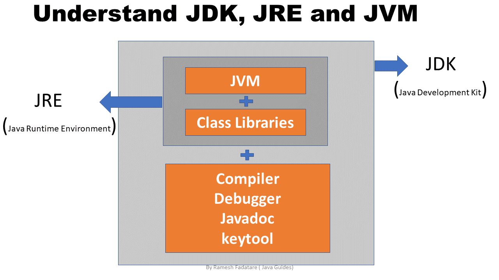
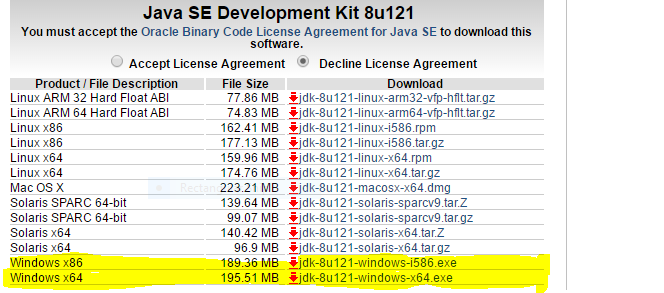
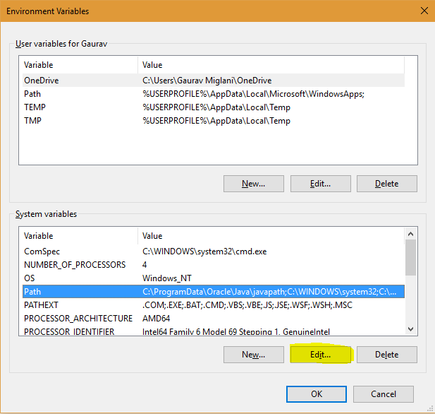
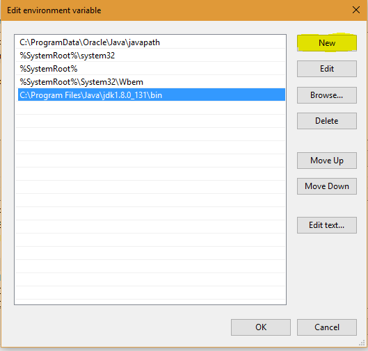

Java is a universally useful PC programming language that is simultaneous, class-based, object-situated, and so forth. Java applications are commonly aggregated to bytecode that can run on any Java virtual machine (JVM) paying little heed to PC engineering. The most recent adaptation is Java 18. The following are the climate settings for both Linux and Windows. JVM, JRE, and JDK three are all stage subordinate on the grounds that the design of each Working Framework is unique. Be that as it may, Java is stage autonomous. Barely any things should be clear prior to setting up the climate which can all the more likely be seen from the underneath picture gave as follows:

♦JDK(Java Development Kit): JDK is intended for software developers and includes development tools such as the Java compiler, Javadoc, Jar, and a debugger.
♦JRE(Java Runtime Environment): JRE contains the parts of the Java libraries required to run Java programs and is intended for end-users. JRE can be viewed as a subset of JDK.
♦JVM: JVM (Java Virtual Machine) is an abstract machine. It is a specification that provides a runtime environment in which java bytecode can be executed. JVMs are available for many hardware and software platforms.
Now let us discuss the steps for setting up a Java environment with visual aids. Let’s use the Windows operating system to illustrate visual aids.
Steps: Here we will be proposing steps for three different operating systems as listed:
→Windows operating system
→Linux operating systembr
→macOS operating system
A. Windows operating systems
Steps for setting the environment in Windows operating system are as follows:
Step 1: Java8 JDK is available at Download Java 8. Click the second last link for Windows(32 bit) and the last link for Windows(64 bit) as highlighted below.

Step 2: After download, run the .exe file and follow the instructions to install Java on your machine. Once you install Java on your machine, you have to set up the environment variable
Step 3: Go to Panel -> System and Security -> System. Under the Advanced System Setting option click on Environment Variables as highlighted below.

Step 5: You will see a list of different paths, click on the New button, and then add the path where java is installed. By default, java is installed in “C:\Program Files\Java\jdk\bin” folder OR “C:\Program Files(x86)\Java\jdk\bin”. In case, you have installed java at any other location, then add that path.

Step 6: Click on OK, Save the settings, and you are done !! Now to check whether the installation is done correctly, open the command prompt and type javac -version. You will see that java is running on your machine.
Note: To make sure whether the compiler is set up, type javac in the command prompt. You will see a list related to javac.